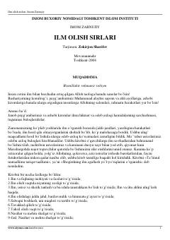

IOIslomda ilm olish odoblari va sirlarini o'rgatuvchi ma'rifiy asar.
Ushbu kitobda ilm olish sirlari, shogirdning ilm egallash yo'l-yo'riqlari, niyatning xosligi hamda ustoz va sherik tanlash odoblari bayon qilingan. Shuningdek, ilm va fiqhning fazilati, taqvo va parhezkorlik kabi muhim ma'naviy masalalar yoritib berilgan.